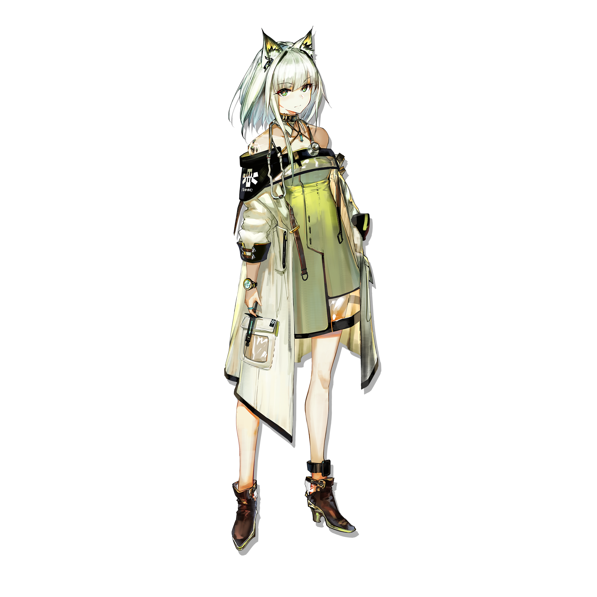

TERRA ARCHIVE / 01
ORIGINIUMS
源石是泰拉世界中的重要物质，也是技术与危机共同围绕的核心。页面将设定以术语目录组织，使世界观从氛围进入可查询的档案。
查看官方完整设定 ↗RHODES ISLAND
HTTPS://AK.HYPERGRYPH.COM/

RHODES ISLAND ://
PROFILE
KAL'TSIT
罗德岛最高管理者之一，阿米娅的直接辅导者。
罗德岛医疗部门的总负责人。
作为罗德岛的老成员，凯尔希医生是在阿米娅背后最稳固的援护者。
OFFICIAL OPERATOR ARCHIVE / 本地保留 3 位干员与 2 个精英阶段
SCROLL ⌄TERRA ARCHIVE / 01
源石是泰拉世界中的重要物质，也是技术与危机共同围绕的核心。页面将设定以术语目录组织，使世界观从氛围进入可查询的档案。
查看官方完整设定 ↗设定说明为简短学习摘要；右侧 CSS 晶体替代官网 WebGL 粒子场。